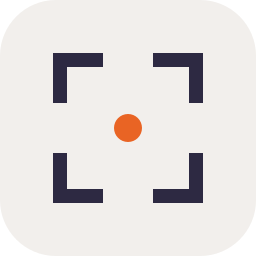

Version 2 · response to "all bland"
Six fresh directions, each with one specific bold move called out below the title. Same review format: 16 / 64 / 256 px on warm canvas and dark cool surface.
'sella' set in Inter Black with an oversized primary-500 dot scaled as a co-equal element to the type, not a polite terminator.
Bold move: dot at ~50% of cap-heightOn warm canvas
On dark surface
Brand-orange 'S' on cool-700 canvas — flips the brand fingerprint. Heavy stroke with butt terminals for confident, modern letterform; the orange becomes the figure, not the accent.
Bold move: orange dominant, cool groundOn warm canvas
On dark surface
An abstracted saddle profile — pommel rise, seat dip, cantle rise — as a confident filled mass. Figurative where most software brands aren't, leaning hard into the etymology.
Bold move: software brand as silhouetteOn warm canvas
On dark surface
'SELLA' set ultra-thin (Inter 200) and wide-tracked under a heavy primary-500 bar — institutional, precise, the wordmark's deliberate counterpoint to v2-1.
Bold move: orange bar as branding device, not punctuationOn warm canvas
On dark surface
Four corner brackets framing the primary-500 answer-dot — precision and focus made geometric. Conceptually: 'the answer is here, in this frame'.
Bold move: subject is the negative space, not the marksOn warm canvas

On dark surface
An asymmetric horizontal record card with a cut top-right corner — references the document/identifier/manifest world without illustration. The orange dot lives in the cut, where the corner used to be.
Bold move: non-square proportions, intentional asymmetryOn warm canvas
On dark surface
Notes: concepts 01 and 04 draw type directly on transparent canvas (no warm container), so they read weakly on dark — they'd need a light-on-dark variant. Concept 02 is intentionally inverted (cool-700 ground, orange figure), so it carries its own dark surface and looks the same on both panels. Concepts 03 / 05 / 06 carry a warm container and stay legible on either background.